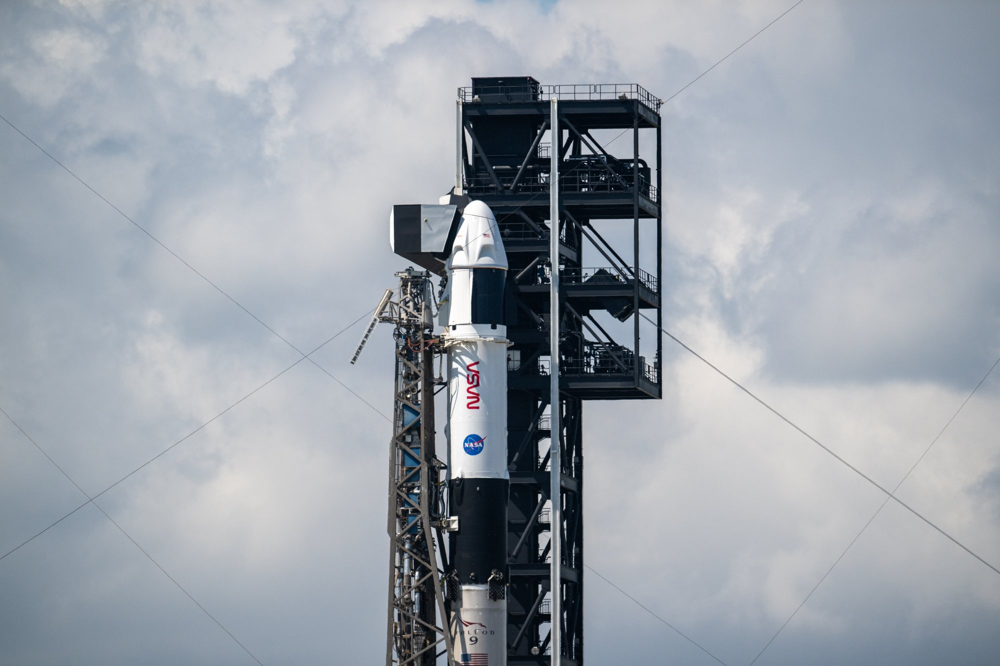
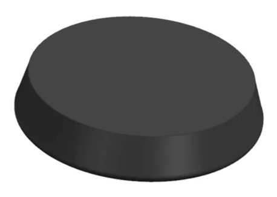
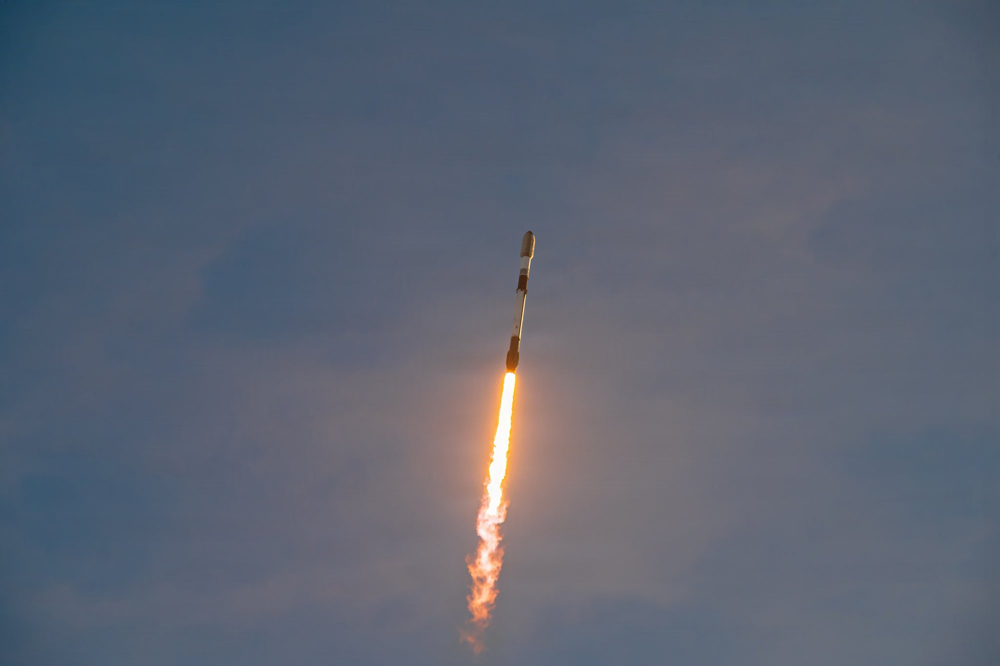

SpaceX riporta in volo Starfall, la capsula di rientro senza equipaggio presentata a giugno quasi di nascosto. Questa volta non viaggia da sola: è montata in cima ai 32 carichi della missione Bandwagon-5, un volo rideshare che porta in orbita bassa satelliti radar, satelliti per la navigazione, rimorchiatori spaziali e perfino una seconda capsula di rientro, quella di Varda Space Industries. Per SpaceX è il secondo, e per ora ultimo, volo dimostrativo autorizzato dalla FAA prima di trasformare Starfall in un servizio commerciale.
Che cosa parte da Cape Canaveral
Dopo il rinvio, la finestra di lancio si apre martedì 20 ottobre alle 6:30 della costa est americana, le 12:30 in Italia, e resta aperta un’ora. Il Falcon 9 parte dal complesso SLC-40 della Cape Canaveral Space Force Station e punta verso sud-est, in direzione dell’Atlantico. Il 17 ottobre SpaceX ha pubblicato le immagini della chiusura dell’ogiva: i 32 carichi impilati sull’adattatore, con il disco di Starfall nella parte più alta della pila.
Il primo stadio è il B1085, al diciannovesimo volo. È un booster con una storia ricca: ha debuttato portando l’equipaggio Crew-9 della NASA verso la Stazione Spaziale nel settembre 2024 e ha lanciato poi Fram2, la prima missione con astronauti in orbita polare, il lander lunare Blue Ghost di Firefly, il satellite meteorologico europeo MTG-S1, due satelliti radio SXM, EchoStar XXV, la missione RRT-1 e dieci gruppi di satelliti Starlink. Circa nove minuti dopo il decollo dovrà atterrare sulla nave drone A Shortfall of Gravitas, nell’Atlantico. Se tutto andrà bene sarà il 167° atterraggio su quella nave e il 672° di un booster Falcon.
Il meteo è stato il punto debole di lunedì, e alla fine ha fermato il lancio. Per quella finestra il 45° Weather Squadron della Space Force dava il 55 per cento di probabilità di condizioni accettabili: un fronte freddo sul sud della Florida porta raffiche di vento che, alla partenza, si avvicinavano ai limiti del razzo, con un rischio da moderato ad alto che il mare nella zona di recupero del booster non fosse adatto. È stato proprio quest’ultimo fattore a far annullare il tentativo. Per martedì le previsioni salgono al 90 per cento.

Starfall, il disco che torna a terra
Starfall non assomiglia a una capsula tradizionale. È un disco basso e largo: 3,1 metri di diametro, appena 75 centimetri di altezza, circa 2.100 chilogrammi a vuoto, con la capacità di riportare a terra fino a 1.000 chilogrammi di carico. La forma ricorda un enorme disco da hockey. Il corpo è diviso in due metà: sopra una piastra in alluminio, in parte rivestita di protezione termica, che ospita i piccoli propulsori ad azoto per orientare la capsula; sotto uno scudo termico in fibra di carbonio, che contiene i serbatoi di gas compresso e viene sganciato prima dell’ammaraggio. La discesa finale avviene con i paracadute.
Il disco non ha un motore proprio per uscire dall’orbita. Per scendere si affida al secondo stadio del Falcon 9, che lo porta sulla traiettoria di rientro e poi lo libera. I propulsori ad azoto servono solo a tenerlo nell’assetto corretto durante l’attraversamento dell’atmosfera. Nella sequenza annunciata, il rilascio dei carichi comincia 57 minuti e 18 secondi dopo il decollo; Starfall è l’ultimo a separarsi, a 2 ore, 48 minuti e 28 secondi dal lancio. Se il Falcon 9 partisse all’apertura della finestra di martedì, sarebbe intorno alle 15:20 ora italiana.
SpaceX presenta Starfall come un laboratorio di microgravità: un mezzo con cui ricercatori e aziende possono produrre o sperimentare in orbita e poi recuperare il risultato. Nel lungo periodo il progetto guarda anche alle consegne di merci da un punto all’altro del pianeta passando dallo spazio. Oggi Starfall viaggia su Falcon 9, ma l’obiettivo dichiarato è lanciare queste capsule a gruppi con Starship, molte alla volta. SpaceX non ha detto se il disco di questo volo trasporti esperimenti.

Che cosa ha insegnato il primo volo di giugno
La prima Starfall è partita il 23 giugno 2026 dallo stesso complesso SLC-40, sulla missione Starfall Demo. SpaceX aveva tenuto il riserbo fino a pochi giorni prima e durante la diretta non aveva indicato nemmeno il momento del rilascio. In quel volo il disco è rimasto agganciato al secondo stadio per circa un’orbita e mezza; poi lo stadio ha eseguito l’accensione di rientro e ha liberato la capsula, che ha separato le sue due metà, aperto i paracadute ed è ammarata nel Pacifico, circa 1.300 chilometri a ovest della costa americana.
Il recupero è riuscito. La nave Shannon ha raccolto la capsula e i suoi componenti e li ha portati al porto di Long Beach, in California, da dove sono partiti su camion per le ispezioni. A bordo c’era almeno un carico vero: MicroBrew-2, un esperimento del birrificio texano Starbase Brewing (che con SpaceX condivide solo il nome) con decine di ceppi di lieviti da birra, da distillazione e da vino, insieme a semi di piante tipiche del Texas. Il volo ha provato anche le comunicazioni durante il blackout radio del rientro, la fase in cui il plasma attorno al veicolo blocca i segnali.
Nel maggio 2026 la FAA aveva pubblicato la valutazione ambientale definitiva per le missioni dimostrative, autorizzandone al massimo due, con ammaraggio nel Pacifico in acque internazionali, a circa 700 miglia nautiche dalla costa ovest. Bandwagon-5 è quindi la seconda di quelle due prove. Anche questa volta il rientro è previsto nel Pacifico, con il recupero affidato alle navi SpaceX.

Gli altri 31 carichi di Bandwagon-5
Le missioni Bandwagon sono il servizio rideshare di SpaceX verso orbite di media inclinazione: piccoli satelliti di aziende, enti pubblici e università che condividono lo stesso razzo. Il listino pubblico parte da 350.000 dollari per 50 chilogrammi, molto meno del costo di un Falcon 9 dedicato. Bandwagon-5 arriva poche settimane dopo Transporter-18, il volo rideshare di inizio ottobre.
Una ventina di carichi è gestita da Exolaunch, la società tedesca che ha partecipato a tutte le missioni rideshare di SpaceX. Fra questi ci sono LEO Express 4 di Impulse Space, un rimorchiatore orbitale capace di trasportare altri satelliti su orbite più alte e di avvicinarsi ad altri oggetti, e i quattro satelliti Pulsar di Xona Space Systems: sono i primi elementi di una costellazione di circa 250 satelliti per posizionamento e tempo, un’alternativa commerciale al GPS con un segnale almeno cento volte più forte, perché orbita molto più vicino alla Terra. Volano anche quattro satelliti HawkEye 360 per il monitoraggio delle radiofrequenze.
Il gruppo più numeroso è quello dei satelliti radar ad apertura sintetica, che fotografano il suolo di giorno e di notte e con qualsiasi tempo: quattro di ICEYE, due di Capella Space e due di Umbra. C’è poi Pelican-12 di Planet Labs, un satellite ottico ad altissima risoluzione, e Starburst-1 di Portal Space Systems, una piattaforma da 260 chilogrammi pensata per manovrare e cambiare orbita in fretta, al primo volo dimostrativo pagato interamente dall’azienda.
Il carico più curioso, dopo Starfall, è la W-7 di Varda Space Industries, una capsula di rientro circa tre volte più piccola del disco SpaceX. Nonostante il nome è la nona capsula lanciata da Varda: W-8 e W-9 sono partite all’inizio del mese con Transporter-18. La W-7 porta un farmaco antitumorale della famiglia PROTAC, molecole che aiutano la cellula a distruggere proteine dannose ma che si sciolgono male. In microgravità i cristalli si formano in modo diverso: l’esperimento vuole capire se si ottiene una forma più solubile, quindi più facile da trasformare in una cura. Sullo stesso razzo volano così due capsule di rientro di due aziende che, su questo mercato, saranno anche concorrenti.
| Momento | Fase | Che cosa succede |
|---|---|---|
| 12:30 | Decollo | Apertura della finestra di un’ora dal complesso SLC-40 |
| circa 12:39 | Booster | Atterraggio del B1085 sulla nave A Shortfall of Gravitas |
| 13:27 | Rilasci | Inizio della separazione dei carichi rideshare (T+57:18) |
| circa 15:18 | Starfall | Ultimo rilascio, la capsula SpaceX (T+2:48:28) |
| dopo | Rientro | Ammaraggio previsto nel Pacifico e recupero con navi SpaceX |
Perché conta
Lanciare carichi in orbita è ormai la parte più consolidata del lavoro di SpaceX. Riportarli a terra in modo regolare ed economico è invece un problema ancora aperto. Per produrre in orbita farmaci, cristalli o semiconduttori bisogna poter recuperare il prodotto spesso e a costi bassi, senza dipendere dai pochi posti disponibili sulle capsule cargo della Stazione Spaziale. Starfall è la risposta di SpaceX: una capsula pensata per essere prodotta in serie e lanciata insieme ad altri carichi sui razzi che l’azienda già fa volare quasi ogni giorno.
La seconda prova servirà a confermare che il primo recupero non è stato un caso e a misurare quanto del disco si può riutilizzare. Restano alcune domande senza risposta: quando SpaceX aprirà Starfall ai clienti, a che prezzo, e con quali autorizzazioni per i voli successivi, visto che la valutazione FAA attuale copre soltanto due dimostrazioni. Seguiranno l’esito del lancio di martedì, la conferma del rilascio di Starfall e, nelle ore successive, la notizia del suo ammaraggio.
Il dossier sull’ipotesi di vendita a SpaceX del Boca Chica State Park passa all’archivio Notizie: in primo piano, oggi, c’è il ritorno in orbita di Starfall.
Fonti pubbliche e tracce
Ultimo aggiornamento editoriale: 19 ottobre 2026, ore 15:10 (ora italiana), dopo il rinvio del lancio a martedì 20 ottobre. Nel corpo non si ripete la fonte a ogni frase: le tracce sono raccolte qui. Orari e sequenza sono quelli pianificati.
- SpaceX su X, 19 ottobre 2026, ore 9:27 italiane: rinvio a non prima di martedì 20 ottobre per condizioni meteo sfavorevoli nella zona di recupero.
- SpaceX, pagina della missione Bandwagon-5: nuova finestra di un’ora dalle 6:30 ET del 20 ottobre, riserva il 21 ottobre.
- SpaceX su X, 17 ottobre 2026: incapsulamento dei 32 carichi di Bandwagon-5 e foto ufficiale della pila nell’ogiva.
- Spaceflight Now, Will Robinson-Smith, 18 ottobre 2026, aggiornato il 19 ottobre: annullamento del tentativo di lunedì per il meteo nella zona di recupero, previsione al 90% per martedì, finestra di lancio, previsioni del 45° Weather Squadron, storia del B1085 e conteggio degli atterraggi, dati FAA su Starfall, Varda W-7, Starburst-1.
- NASASpaceFlight, Eleanor Day, 18 ottobre 2026: tempi di rilascio (T+57:18 e T+2:48:28), struttura di Starfall, carichi Exolaunch, Xona, ICEYE, Capella, Umbra, Planet, prezzo del rideshare.
- NASASpaceFlight, giugno 2026: missione Starfall Demo del 23 giugno, sequenza di rientro, valutazione ambientale FAA del 15 maggio con il limite di due voli dimostrativi.
- San Antonio Express-News: esperimento MicroBrew-2 di Starbase Brewing a bordo della prima Starfall e recupero a circa 800 miglia dalla California.
- News9live, giugno 2026: recupero della prima Starfall il 25 giugno con la nave Shannon, prova delle comunicazioni durante il blackout.
- SpaceX su X, 23 giugno 2026: conferma del rilascio di Starfall nella missione dimostrativa.
Fotografie utilizzabili
La copertina è la foto ufficiale SpaceX dei carichi di Bandwagon-5 nell’ogiva, usata con credito SpaceX e dicitura «uso editoriale non commerciale». Le altre tre immagini sono di pubblico dominio: il B1085 della missione Crew-9 (NASA), il disegno di Starfall dalla documentazione FAA e il lancio Starfall Demo di giugno (U.S. Space Force). Dettagli in scheda dei crediti fotografici.
Apri il dossier Boca Chica archiviato · Archivio Notizie · Torna a SpaceX